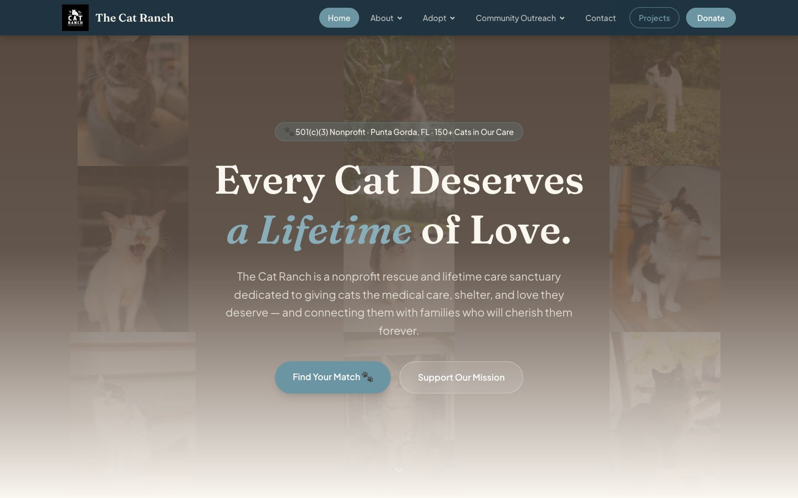
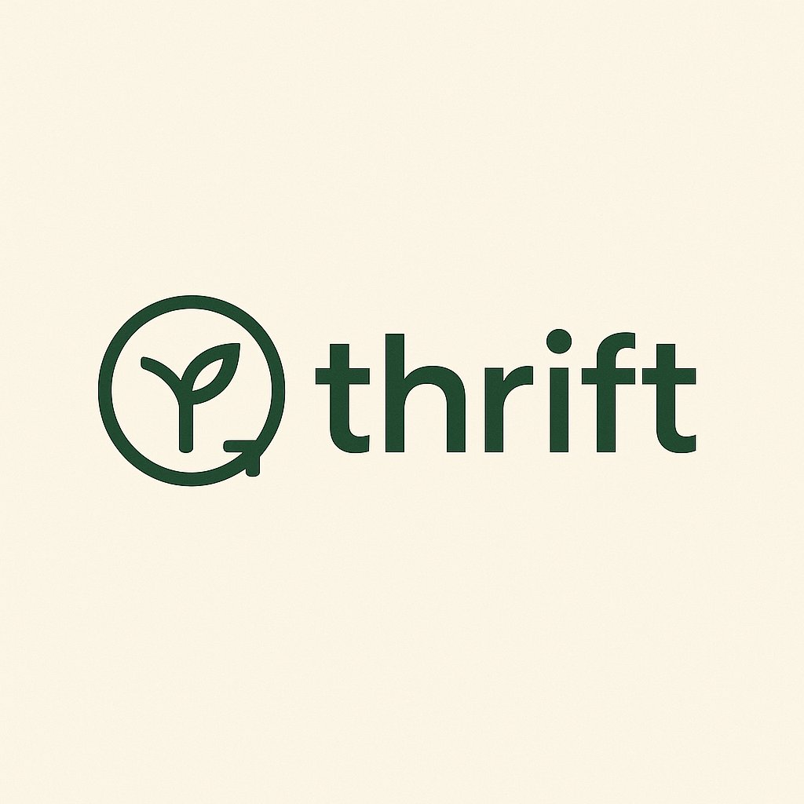
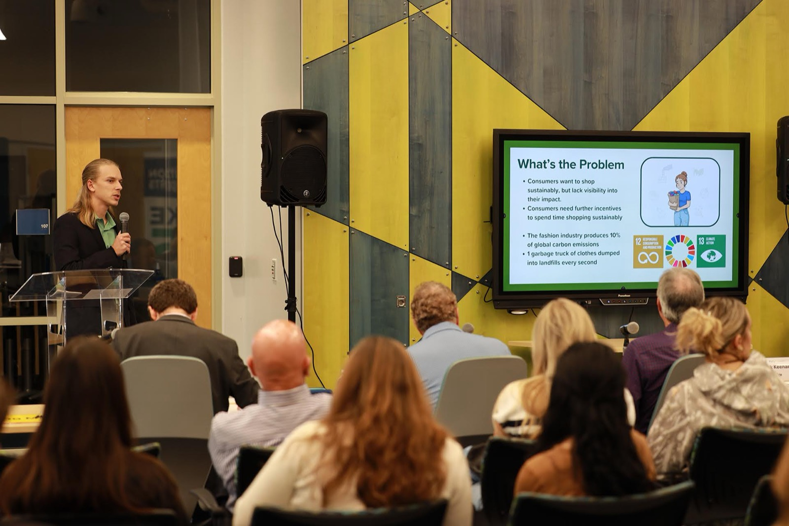
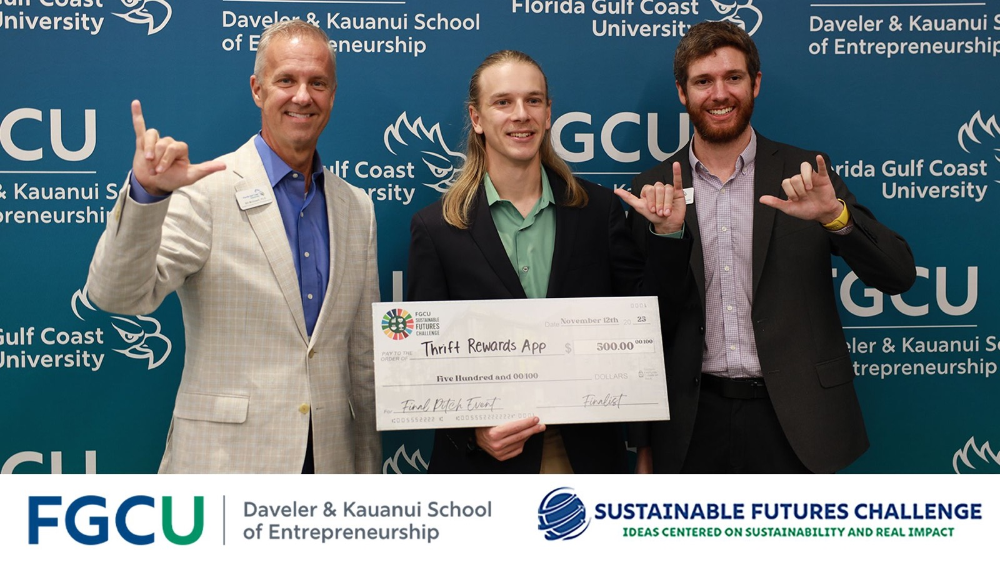
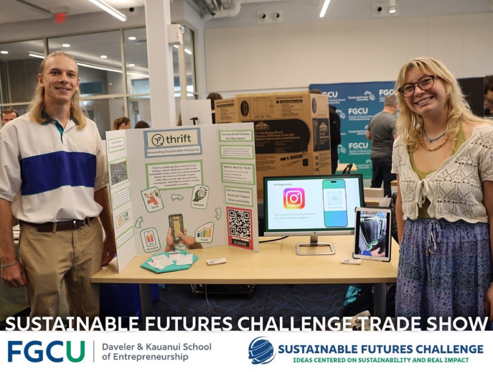

Trent Seidl • Orlando, FL
Guest service at Walt Disney World, websites for small businesses and nonprofits, and an app of my own in development. Whatever I am working on, the goal is the same: make someone's day a little better.
About
I am a Concierge and cross-trained Runner at Disney's Saratoga Springs Resort & Spa through the Disney College Program. Most days that means helping families plan their trip, untangling the occasional problem, and finding a way to say yes. I am working toward a long-term career with The Walt Disney Company.
Before Disney, I worked on the other side of the guest experience, selling rider restraint systems to amusement parks and carnivals at Safe-Strap and running recreation programs at Hyatt Vacation Club.
Outside the resort, I design and build websites for small businesses and nonprofits, and I am developing Thrift, a sustainability rewards app.
Whether it is a guest's vacation, a client's website, or an app built from scratch, I like taking something from idea to reality.
Experience
Concierge & Runner, Disney College Program
Disney's Saratoga Springs Resort & Spa • Walt Disney World
Helping Guests at a 1,260-room Disney Vacation Club resort plan their stays, from park logistics and dining to personalized recommendations, and stepping in with service recovery when a day does not go to plan. Cross-trained as a Runner supporting seven Walt Disney World resorts.
Founder & Freelance Web Designer
Thrift App LLC
Designing, building, and launching websites for small businesses and nonprofits, managing each project from first conversation to launch day. Alongside client work, I am developing Thrift, a sustainability rewards app.
Amusement Business Development Manager
Safe-Strap Company, Amusement Division
Led B2B sales of seatbelts and rider restraint systems to amusement parks and traveling carnivals, building relationships with buyers, operators, and manufacturers. Represented Safe-Strap as an exhibitor at the IAAPA Expo and helped grow the division's digital presence.
Management Intern
Hyatt Vacation Club at Coconut Cove
Ran recreation programming for Guests of all ages, from youth activities to pickleball instruction, while working alongside housekeeping and security to keep the resort running smoothly. It is where I learned how much the small details of service matter.
Education
Lutgert College of Business
Bachelor of Science in Business Management
Minor in Computer Information Systems • Graduated May 2025
Services
Web Design and Development
I design, build, host, and maintain clean, professional websites and applications for small business owners, nonprofits, entrepreneurs, and professionals across industries. From custom design to deployment and ongoing updates, I handle the digital side so you can stay focused on your mission.
What you get
Custom Design
A site built around your brand, your content, and your goals. Not a theme someone else picked.
Setup and Hosting
Domain connection, hosting setup, and launch handled end to end. I recommend the right platform for your specific needs.
Ongoing Support
Need to update a photo, add a page, or change your hours? I handle it so you can stay focused on your business.
Who I work with
Client Work

The Cat Ranch
Nonprofit cat sanctuary • Southwest Florida
A new website for a 501(c)(3) rescue and lifetime care sanctuary that is home to more than 150 cats. The highlight is an interactive "Find Your Match" experience that pairs visitors with adoptable cats, supported by pages for fostering, volunteering, donating, and sponsoring cats with special medical needs.
Visit catranch.org →Featured Project
In development

A sustainability-focused thrift shopping app built to help people make more conscious purchasing decisions and feel good about it. Thrift uses receipt scanning and a rewards system to track impact, celebrate progress, and build community around smarter consumption.



Contact
Whether you work in hospitality or themed entertainment, need a website for your business or nonprofit, or are curious about Thrift, I would love to hear from you. I am always open to conversations that lead somewhere interesting.